功能详述
支持 SV48 分页机制
SV48 （Supervisor-mode Virtual Memory）是一种基于 RISC-V 的页表虚拟内存寻址模式，指定了 48 位虚拟地址空间的结构，支持 256TB 的虚拟内存地址空间。使用四级页表结构：
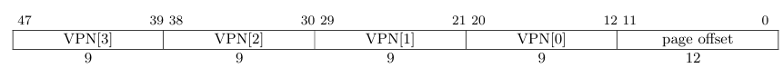
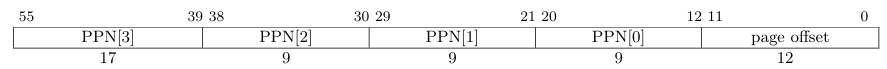
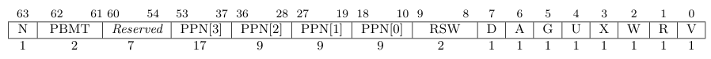
在 SV48 的一个 PTE 中包含了如下字段：
-
N:- 指示是否为
NAPOT PTE。供Svnapot扩展使用，如果未实现Svnapot则该位必须由软件置0，否则应当出现Page Fault。目前香山昆明湖架构尚未支持此扩展。
- 指示是否为
-
PBMT:Page-Based Memory Types，即基于页面的内存类型，供Svpbmt扩展使用，允许操作系统为每个页面指定不同的内存访问属性。0:None，没有特定的内存属性。1:NC，非缓存、幂等、弱序（RVWMO），适用于主存。2:IO，非缓存、非幂等、强序（I/O排序），适用于I/O设备。3:Reserved，保留供将来标准使用。
同样的，如果未实现
Svpbmt则这两位必须由软件置0，否则应当出现Page Fault。 -
Reserved:- 保留位，供未来的标准使用。如果有任意一位不是
0则会触发PF异常。
- 保留位，供未来的标准使用。如果有任意一位不是
-
PPN:- 表示物理页框号，指向实际的物理内存页。
PPN与页面内偏移结合形成完整的物理地址，用于地址转换。
- 表示物理页框号，指向实际的物理内存页。
-
RSW:- 保留供软件使用的位，通常用于特定的标志或操作，以便在软件实现中提供灵活性。
-
D:- 脏位，指示该页面是否被写入。如果该位为
1，表示该页的数据已被修改，需在换出时写回到存储设备。
- 脏位，指示该页面是否被写入。如果该位为
-
A:- 访问位，指示该页是否被访问过。如果该位为
1，表示该页已被读取或写入，用于页面替换算法。
- 访问位，指示该页是否被访问过。如果该位为
-
G:- 全局页位，指示该页是否是全局页。如果该位为
1，表示该页对所有进程可见，用于共享代码或数据。
- 全局页位，指示该页是否是全局页。如果该位为
-
U:- 用户访问权限位，指示该页是否可被用户（
U）模式访问。如果该位为1，用户模式可以访问该页；若为0，则仅限于特权模式。
- 用户访问权限位，指示该页是否可被用户（
-
X:- 可执行位，指示该页是否可执行。如果该位为
1，表示该页可以执行代码；若为0，则不可执行。
- 可执行位，指示该页是否可执行。如果该位为
-
W:- 可写位，指示该页是否可写。如果该位为
1，表示该页可以写入数据；若为0，则不可写。
- 可写位，指示该页是否可写。如果该位为
-
R:- 可读位，指示该页是否可读。如果该位为
1，表示该页可以读取数据；若为0，则不可读。
- 可读位，指示该页是否可读。如果该位为
-
V:- 有效位，指示该页表项是否有效。如果该位为
1，表示该项有效，可以进行地址转换；若为0，则表示该项无效。
- 有效位，指示该页表项是否有效。如果该位为
值得一提的是，如果该 PTE 并不是叶子 PTE，即它所存储的 PPN 用来指向下一级页表，那么它的 X、W、R 位应全为零。在手册中的要求如下：
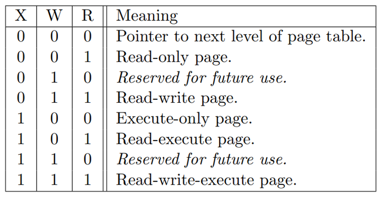
RISC-V H 扩展即 Hypervisor 扩展，增加了对虚拟化和 hypervisor 模式的支持，将会允许虚拟机监控程序和虚拟机的管理程序，允许操作系统运行在虚拟机上，并可以通过 hypervisor 调度虚拟机的运行。在 hypervisor 下使用 SV48x4 寻址模式，支持四倍页表扩展。
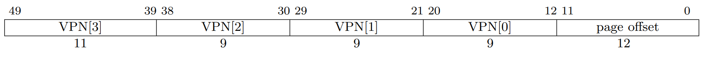
VPN[3] 进行了两位的扩展，也即大小从原来的 4KB 变为 16KB，支持 $2^{11}$ 个 PTE。值得注意的是，SV48x4 作用于虚拟机物理地址 VPA，在虚拟机上创建进程地址空间时仍然采用的是 SV48。也正是因此，虚拟机进行虚实地址转换的时候，首先将 48 位的虚拟机虚拟地址（GVA）转换为 50 位的虚拟机物理地址（GPA），之后再将 GPA（相当于主机的 HVA）转换为主机物理地址（HPA）。在页表项中存储的是 44 位的 PPN，这是由 56 位的物理地址去掉 12 位的页内偏移得到的，因此完全可以存的下扩展了两位（38 位）的 VPN。
出于对面积等的优化考虑，在香山中采用 48 位的主机物理地址，而不是 Sv48 要求的 56 位物理地址，这是因为 48 位的物理地址已经可以索引 256TB 的物理地址空间，目前来说已经足够使用。但是由于 TLB 对虚拟机的支持，在虚拟机两阶段地址转换过程中（两阶段地址转换可见支持两阶段虚实地址翻译过程部分），虚拟机通过 VS 阶段转换的结果仍然是 56 位的虚拟机物理地址，只不过在进入 G 阶段地址转换时，G 阶段要求传入的 GPA 的高 6 位必须为 0，这是因为在 Sv48x4 中客户机物理地址要求为 50 位，而 VS 阶段得到的物理地址是 56 位。为了保持 gpaddr 的完整性，PTW 传入 TLB 的 ppn 信号的位宽依然为 44 位，然而由于 TLB 不存储中间转换结果（中间物理地址 IPA），也就不需要存储 44 位的 ppn，在 TLB 表项中存储的只有主机的 ppn，也即 36 位的 ppn。
支持缓存映射条目
TLB 中存储的条目并不是页表项 PTE，而是一个映射，一个从虚拟地址（来自于请求）到物理地址（来自于查找结果）的映射，当然还有一些访问所必须的信息。在目前的香山中 TLB 所存储的条目包含 tag[35]、asid[16]、vmid[14]、level[2]、ppn[33]、8 × ppn_low[3]、8 × valididx、8 × pteidx、s2xlate、perm[6]、g_perm[4]。为供以后使用 svpbmt 扩展，还存储了 pbmt 与 g_pbmt 字段。
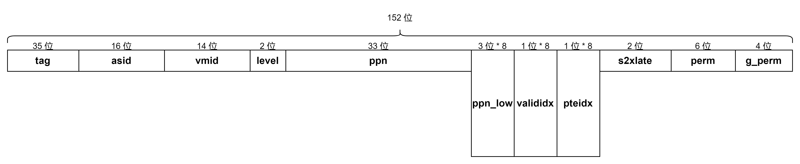
-
tag[34:0]
tag，用于匹配条目。来源于VPN的高35位，在匹配的过程中，输入一个38位的VPN，通过将输入的VPN的前35位与tag比较找到对应的条目，可以看到在一个条目中存储了PPN的高位部分和8个ppn_low，之后将VPN的后三位作为索引，可以索引这8个ppn_low，即可将ppn与ppn_low[vpn_low]拼接得到物理页框号。
-
asid[15:0]
- 地址空间标识符，用于区分不同的进程地址空间。
-
vmid[13:0]
- 虚拟机标识符，用于区分不同的虚拟机。
-
level[1:0]
- 指示页面的大小。
0：4KB，1：2MB，2：1GB，3：512GB。
- 指示页面的大小。
-
ppn[32:0]
- 物理页框号的高
33位。在Sv48要求下本该是41位，出于面积考虑优化至33位（见支持Sv48分页机制部分）。
- 物理页框号的高
-
ppn_low[2:0]×8
- 物理页框号的低
3位。用于TLB压缩（见支持TLB压缩部分）。
- 物理页框号的低
-
valididx×8
- 指示对应的
ppn_low是否有效。用于TLB压缩，为0表示条目无效，即对应物理地址没有存储页表条目。
- 指示对应的
-
pteidx×8
- 指示原始请求对应压缩条目的哪一项。例如
vpn低三位为010，那么pteidx[3]为1，其它7位为0。
- 指示原始请求对应压缩条目的哪一项。例如
-
s2xlate[1:0]
- 指示是否启用两阶段地址转换。
0b00：不启用，0b01：仅使用第一阶段，0b10：仅使用第二阶段，0b11：启用两阶段地址转换。
- 指示是否启用两阶段地址转换。
-
perm[5:0]
- 指示主机的权限以及异常信息，包括
pf、af、a、g、u、x六位。其中pf（page fault）指示是否发生缺页异常；af（access fault）指示是否发生地址错误等访问错误异常；a（access）指示该表项是否最近被访问过，任何形式的访问（包括读、写、取指）均会将a位置1，用于页面替换算法；g（global）指示该条目指向的页面是否为全局页面；u（user）指示该条目指向的页面是否可以被用户模式访问，u位为1说明可以被UMode访问，为0说明可以被SMode访问；x（执行）指示该条目指向的页面是否可执行，itlb用于取指的加速，所有取出的条目必须是可执行的。
- 指示主机的权限以及异常信息，包括
-
g_perm[3:0]
- 指示虚拟机的权限以及异常信息，包括
gpf、gaf、a、x四位，虚拟机的g和u两位不单独存储，与主机共用。一般情况下虚拟机对全局页、用户模式的处理与主机相同，而替换策略与访问权限控制可能不同，所以共用了g、u而不共用a、x。gpf（guest page fault）为虚拟机缺页异常，gaf（guest access fault）为虚拟机访问错误异常。
- 指示虚拟机的权限以及异常信息，包括
香山的 ITLB 采用 48 项全相联的结构，保存全部大小页，共能存储 48 条映射。
在支持 H 扩展的前提下，对于不同的 s2xlate 的状态 TLB 中存储的条目的值代表的意义也会有所区别：
| 类型 | s2xlate | tag | ppn | perm | g_perm | level |
|---|---|---|---|---|---|---|
| noS2xlate | b00 | 非虚拟化下的虚拟页号 | 非虚拟化下的物理页号 | 非虚拟化下的页表项 perm | 不使用 | 非虚拟化下的页表项 level |
| allStage | b11 | 第一阶段页表的虚拟页号 | 第二阶段页表的物理页号 | 第一阶段页表的 perm | 第二阶段页表的 perm | 两阶段翻译中最大的 level |
| onlyStage1 | b01 | 第一阶段页表的虚拟页号 | 第一阶段页表的物理页号 | 第一阶段页表的 perm | 不使用 | 第一阶段页表的 level |
| onlyStage2 | b10 | 第二阶段页表的虚拟页号 | 第二阶段页表的物理页号 | 不使用 | 第二阶段页表的 perm | 第二阶段页表的 level |
支持 H 扩展后 TLB 中缓存的条目会有所变化（表中未提及的条目即没有变化）：
| 支持 H 扩展 | vmid | s2xlate | g_perm |
|---|---|---|---|
| 否 | 不保存 | 不保存 | 不保存 |
| 是 | 14位 | 2位 | 4位 |
支持保存全部大小页
在 RISC-V 架构中，大小页机制旨在优化虚拟内存的使用效率和性能。Sv48 支持多种页面大小，包括 4KB、2MB、1GB 页，在标准的设计中没有定义 512GB 的页，理论上可行，但目前并没有这样的需要，512GB 的页也无法加载进内存，因此标准不做要求。但是出于对完整性的考虑，香山中依然实现了对 512GB 大页的支持。

在一般的应用程序需求中，4KB 的页面足够满足日常的使用，可以存储较小的数据结构以及程序等，常用于大多数应用程序中。然而，有的程序可能会需要频繁访问大的数据结构或数据集，这时引入大页可以提升内存访问效率。每个大页覆盖的虚拟地址空间更大，可以显著减少页表条目的数量；在映射相同数量的内存时，所需的页表条目会大幅降低，这可以减少内存开销、减少页表查找频率，从而优化内存访问速度，尤其对频繁访问大块内存的应用，能够显著提升性能。大页通常包含连续的数据，可以提高命中率，更有效地利用缓存资源。
当然，由于大页覆盖的地址空间较大，可能导致内存碎片，而未被使用的大页空间无法被其他请求有效利用，也会浪费一定的内存资源。同时，管理不同大小的页面为内存管理带来了额外的复杂性。在混合使用小页和大页时，操作系统需要复杂的算法来优化内存分配和使用。现代操作系统通常采用混合使用大小页的模式以满足不同应用的不同需求。
在香山的 TLB 中，支持保存任意大小的页面，这是通过保存页面的 level 来实现的。根据不同的 level，可以决定最终生成物理地址的方法（index 为页内偏移，来源于 vaddr 的低 12 位；ppn、ppn_low、tag 来源于 TLB 中存储的映射条目）：
| level | 页面大小 | paddr[47:0] |
|---|---|---|
| 0 | 4KB | ppn[32:0] + ppn_low[2:0] + index[11:0] |
| 1 | 2MB | ppn[32:6] + tag[8:0] + index[11:0] |
| 2 | 1GB | ppn[32:15] + tag[17:0] + index[11:0] |
| 3 | 512GB | ppn[32:24] + tag[26:0] + index[11:0] |
支持 TLB 压缩
随着虚拟地址空间的不断扩展，传统 TLB 的大小和效率面临挑战，可能不足以覆盖应用程序的需求，导致频繁的缺失（TLB miss），从而影响系统性能，导致性能瓶颈。为了应对这一问题，TLB 压缩技术应运而生，旨在提高 TLB 的有效性和性能。
在操作系统分配内存的时候，由于使用伙伴地址分配策略等原因，会倾向于将连续的物理页分配给连续的虚拟页。虽然随着程序的不断运行，页分配逐渐的从有序趋向于无序，但是这种页的相连性普遍存在，因此可以通过将多个连续的页表项在 TLB 硬件中合成为一个 TLB 项，以增大 TLB 容量。TLB 压缩通过优化页表结构，支持连续的映射，通过引入范围映射（range mapping）机制，一个 TLB 条目可以映射一段连续的虚拟地址到一段连续的物理地址。
在实际中，以香山昆明湖架构为例，在 TLB 中存储 35 位的 vpn_high（即 tag），剩下的三位用于索引对应的 ppn_low（一共有 8 个所以需要 3 位来索引）。每次匹配中，TLB 用传入的 vaddr[49:15]（高 35 位）与 tag 进行匹配，找到对应的条目，这个条目中可以存储 8 个 PTE，再根据 vaddr[14:12] 找到对应的 ppn_low，之后检查对应的 valididx 是否有效，如果有效说明 hit，将 ppn_low 与 ppn_high 拼接得到 PPN，再与 vaddr[11:0] 拼接得到 paddr。

在支持了 H 扩展后（见支持两阶段虚实地址翻译），TLB 压缩仅在 OnlyStage1 和 noS2xlate 下启用，在其他情况下不启用。
支持 TLB 压缩后 TLB 中缓存的条目会有所变化（表中未提及的条目即没有变化）：
| 是否压缩 | tag | ppn | valididx | pteidx | ppn_low |
|---|---|---|---|---|---|
| 否 | 38位 | 36位 | 不保存 | 不保存 | 不保存 |
| 是 | 35位 | 33位 | 8位 | 8位 | 8×3位 |
在支持了大小页的情况下，TLB 压缩在大页情况下（2MB/1GB/512GB）不启用，仅在查询结果为小页（4KB）情况下启用。大页在返回时会将 valididx 的 8 位全部设置为 1，而由于大页的查询过程中只需要 PPN 的高位，大页下不使用 ppn_low，ppn_low 的值在此时是未定义的。
支持 Hypervisor 扩展与两阶段虚实地址翻译
在 RISC-V 特权指令手册中定义了虚实地址的翻译过程：
-
设
a为satp.ppn×PAGESIZE，并设i = LEVELS - 1。（对于Sv48，PAGESIZE = 2^{12}，LEVELS = 4）此时，satp寄存器必须处于活动状态，即有效的特权模式必须是S模式或U模式。 -
设
pte为地址a + va.vpn[i]×PTESIZE处的PTE值。（对于Sv48，PTESIZE = 8）如果访问pte违反了PMA或PMP检查，则引发与原始访问类型相应的访问错误异常。 -
如果
pte.v = 0，或者pte.r = 0且pte.w = 1，或者pte中设置了任何为未来标准使用保留的位或编码，则停止并引发与原始访问类型相应的页面错误异常。 -
否则，
PTE是有效的。如果pte.r = 1或pte.x = 1，则转到步骤 5。否则，此PTE是指向下一级页面表的指针。设i = i - 1。如果i < 0，则停止并引发与原始访问类型相应的页面错误异常。否则，设a = pte.ppn×PAGESIZE并转到步骤 2。 -
找到了叶子
PTE。根据当前特权模式和mstatus寄存器的SUM和MXR字段的值，确定请求的内存访问是否被pte.r、pte.w、pte.x和pte.u位允许。如果不允许，则停止并引发与原始访问类型相应的页面错误异常。 -
如果
i > 0且pte.ppn[i-1 : 0] = 0，则这是一个未对齐的大页；停止并引发与原始访问类型相应的页面错误异常。 -
如果
pte.a = 0，或者如果原始内存访问是存储且pte.d = 0，则引发与原始访问类型相应的页面错误异常，或者执行以下操作：- 如果对
pte的存储将违反PMA或PMP检查，则引发与原始访问类型相应的访问错误异常。 - 以原子方式执行以下步骤：
- 比较
pte与地址a + va.vpn[i]×PTESIZE处的PTE值。 - 如果值匹配，将
pte.a设为1，并且如果原始内存访问是存储，还将pte.d设为1。 - 如果比较失败，返回步骤 2。
- 比较
- 如果对
-
翻译成功。翻译后的物理地址如下：
pa.pgoff = va.pgoff。- 如果
i > 0，则这是一个大页翻译，且pa.ppn[i - 1 : 0] = va.vpn[i - 1 : 0]。 pa.ppn[LEVELS - 1 : i] = pte.ppn[LEVELS - 1 : i]。
在一般的虚实地址翻译过程中，将按照如上所述的过程进行转换，由 satp 寄存器控制进行地址翻译。其中，前端取指通过 ITLB 进行地址翻译，后端访存通过 DTLB 进行地址翻译。ITLB 和 DTLB 如果 miss，会通过 Repeater 向 L2TLB 发送请求。在目前设计中，前端取指和后端访存对 TLB 均采用非阻塞式访问，即一个请求 miss 后，会将请求 miss 的信息返回，请求来源调度重新发送 TLB 查询请求，直至命中。也就是说，TLB 本体是非阻塞的，可以向它连续发送请求，无论结果都可以在下一拍发送任意的请求，但是总体上由于前端的调度，体现为阻塞访问。
在支持了 H 扩展的前提下，香山的虚拟化地址翻译过程会经历两个阶段的地址转换，可以将它划分为 VS 阶段和 G 阶段。VS 阶段的地址转换由 vsatp 寄存器控制，其实与主机的 satp 寄存器非常相似。
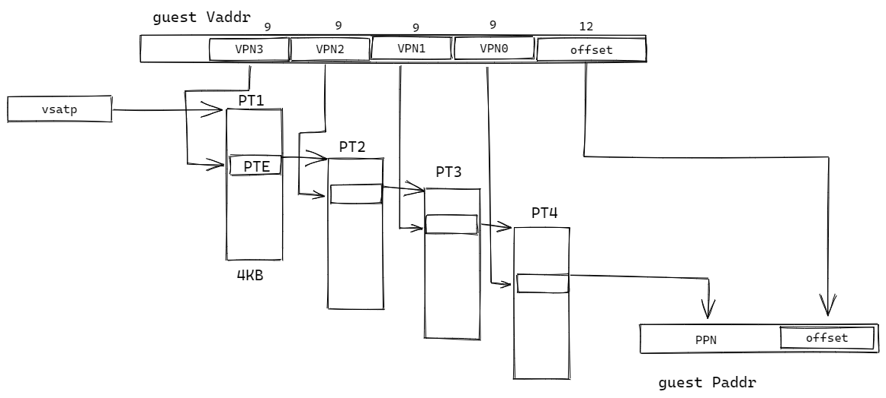
页表项（PTE）的长度为 64 bit，也即每个 4KB 的页面可以存储 $2^9$ 个 PTE。在 vsatp 寄存器中存储了第一级页表（即根页表）的物理地址 PPN，通过这个 PPN 可以找到根页表，并根据 GVA 中的 VPN[3] 找到对应页表项 PTE，在 PTE 中存储了指向下一级页表的 PPN 以及权限位等。以此方式通过逐级的查找最终达到叶子 PTE 并得到 PPN，与 offset 合成后得到 GPA。注意这里的 GPA 应当是 50 位的，最后一级的 PPN 应当是 38 位的，这是因为支持 SV48x4 的原因，虚拟机的物理地址被拓宽了两位。这样的拓宽并不难实现，只需要在主机分配虚拟机内存空间的时候分配一个 16KB 的大页作为根页表即可；通过多使用 12KB（本来分配的根页表大小是 4KB）的物理内存就可以实现虚拟机地址空间增大四倍。至于页表项能否放下多了两位的 PPN，观察 PTE 中 PPN 的位数为 44 位，不需要担心这个问题。44 位的 PPN 放 38 位，前六位并没有清零要求，但是是被忽略的。
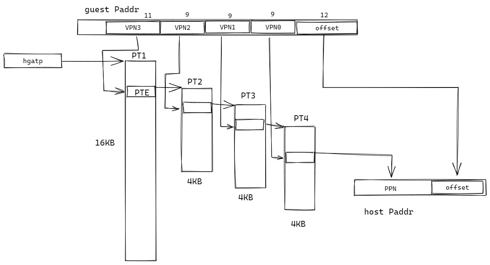
G 阶段的地址翻译则不同，由于支持了 SV48x4，其根页表被扩展为 11 位 16KB，因此需要特别注意 hgatp 寄存器中存储的 PPN 应当对齐 16KB 页，在标准情况下 PPN 的最后两 bit 应当被固定为零，意味着 hgatp 寄存器应当指向一个 16KB 页的起始地址，以避免根页表在不同的小页面内。
在实际的实现中，地址的翻译并不是这样理想化的先查虚拟机的页表得到 GPA 再使用这个 GPA 查主机的页表得到 HPA。事实上的实现中，我们通过虚拟机的页表查到的下一级页表的物理地址是 GPA，并不能通过它访问到下一级页表，每次访问虚拟机的下一级页表都需要进行一次 GPA 到 HPA 的转换。比如此时给定一个 GVA，之后在虚拟机的一级页表（根页表）中根据 GVA[2]（11 bit）查找得到一个 PTE，这个 PTE 存储的是二级页表的 GPA，得到这个 GPA 并不能找到二级页表，因此需要将它转换为 HPA，也就是 G 阶段的地址翻译。依次查找直到找到最终需要的那个 HPA，共需要经历五次 G 阶段地址翻译，才能得到最终的 HPA。

支持阻塞式与非阻塞式访问
阻塞式访问代表着 TLB 的端口同时仅支持一个请求，阻塞端口带 valid-ready 握手信号。在 TLB 准备好接收请求时，会将 ready 置 1，由外部检测到 ready 后会发送请求。请求到达 TLB 时 valid 为 1 则 TLB 接收请求并将 ready 置 0，不再接受新的请求。之后 TLB 会对请求进行匹配，查找结果，如果 miss 则发送 ptw 请求（同样为阻塞），等待直到 ptw 返回结果（物理地址或 pf 异常），然后 TLB 将结果保存并上报给请求方，再将 ready 置 1。
对于非阻塞式请求，仅带 valid 信号，每当 valid 置 1，TLB 即接受请求并在下一拍返回结果（hit/miss/异常），无论是否命中都能在请求下一拍得到结果。如果 miss 的话，TLB 在返回 miss 结果同时会发起 PTW 请求（非阻塞），PTW 接收到请求则进行处理，在处理完成后回填进 TLB 中，然后如果请求方再次发起请求就可以命中。在香山 ITLB 的具体实现中，TLB 本体虽然是非阻塞的，不存储请求的信息，但当前端发起的取指请求 miss 后，将会由前端进行调度不断发起相同取指请求直到 hit，才能将指令送到处理器进行处理，因此会体现出阻塞的效果。
| 请求来源 | iCache | IFU |
|---|---|---|
| 请求数量 | 2 | 1 |
| 请求类型 | 非阻塞请求 | 阻塞请求 |
| 握手信号 | 仅带 valid 信号 | 带 valid 和 ready 信号 |
| 处理方式 | 可以继续处理其他指令 | 等待 iTLB 响应后继续处理指令 |
支持读取 PTW 返回条目
每次 TLB 发生 miss 之后，会向 L2TLB 发送 Page Table Walk 请求。由于 TLB 与 L2TLB 之间有比较长的物理距离，需要在中间加拍，这项工作由 repeator 完成。同时，repeator 还需要对 PTW 请求进行过滤，以避免 TLB 中出现重复项，因此也被称为 filter。目前香山中 TLB 发出的 PTW 请求的内容包含 VPN、s2xlate、getGPA 三个信号以及必要的控制信号：
-
VPN：
- 虚拟页框号，
TLB在miss之后会将VPN发送给PTW用于索引对应的物理页，PTW会将叶子页表的PPN返回给TLB，下次TLB查询的时候就可以找到该页并可以通过页内偏移找到物理地址。
- 虚拟页框号，
-
s2xlate：
- 两阶段地址转换标志，指示当前的两阶段地址转换模式。
TLB中该标志将通过vsatp与hgatp寄存器的mode域进行判断：
s2xlate vsatp.mode hgatp.mode 0b00 0 0 0b01 1 0 0b10 0 1 0b11 1 1 - 两阶段地址转换标志，指示当前的两阶段地址转换模式。
-
getGPA：
- 指示当前
PTW请求是否为请求客户机物理地址。用于客户机缺页等情况的处理（详见支持发生GPF时重新发起请求部分）。
- 指示当前
在支持了 TLB 压缩后，PTW 返回的结果主要包括 resp_valid、tag[33:0]、asid[15:0]、perm[6:0]、level[1:0]、ppn[35:0]、addr_low[2:0]、ppn_low[2:0] × 8、valididx × 8、pteidx × 8、pf、af（各个信号的含义可见支持缓存映射条目部分）。TLB 接收到有效的 PTW resp 后即将这些条目存进自己的缓存中。
在支持了 H 扩展后，TLB 压缩仅在 noS2xlate 和 onlyStage1 时启用，需要添加 s2xlate 信号指示两阶段地址转换的类型，并分开返回 s1 和 s2。其中，s1 阶段可以与之前的主机地址转换合并，在主机地址转换中，s1 添加的部分信号以及位宽不适用，添加或扩充的信号如下所示：
| 支持 H 扩展 | s2xlate[1:0] | tag | vmid[13:0] | ppn | s2 | getGPA |
|---|---|---|---|---|---|---|
| 否 | 无 | [32:0] | 无 | [32:0] | 无 | 无 |
| 是 | 有 | [34:0] | 有 | [40:0] | 有 | 有 |
其中，tag 扩充的两位是由于虚拟机采用 Sv48x4，将 hypervisor 下的虚拟地址从 48 位扩充为 50 位，因此 tag 相应需要多两位。vmid 指示虚拟机号。ppn 多的 8 位是因为主机采用 48 位物理地址，而第一阶段转换出来的虚拟机物理地址为 56 位（在进入下一阶段时要求前 6 位是 0，变为 50 位），getGPA 可见后面支持发生 GPF 时重新发起请求部分。
s2 部分用于第二阶段地址转换，即从虚拟机物理地址到主机物理地址的转换，此时 asid 无效，resp 的信号包括 tag[37:0]、vmid[13:0]、ppn[37:0]、perm[6:0]、level、gpf、gaf。由于不考虑 TLB 压缩，tag 即为 38 位，来自 50 位虚拟地址的高 38 位。值得注意，在目前的香山昆明湖架构中，这里的 ppn 有效的位数仅有后 36 位，之所以 ppn 位宽为 38 位是出于优化的需要，香山 TLB 中通过 readResult 方法从 PTW 中读取信息，s1、s2 阶段复用了 readResult 方法，由于在 s1 阶段的需要用到 50 位的物理地址，readResult.ppn 被定义为 38 位，以至于在 verilog 文件中传入 s2.ppn 时也需要额外多传 2 位，事实上这两位仅仅传进 TLB 中而不起作用，可以忽略。
| 支持 H 扩展 | s2_tag[37:0] | s2_vmid[14:0] | s2_ppn[37:0] | s2_perm[6:0] | s2_level[1:0] | gpf | gaf |
|---|---|---|---|---|---|---|---|
| 否 | 无 | 无 | 无 | 无 | 无 | 无 | 无 |
| 是 | 有 | 有 | 有 | 有 | 有 | 有 | 有 |
添加了 H 拓展后的 MMU，PTW 返回的结构分为三部分，第一部分 s1 是原先设计中的 PtwSec-torResp，存储第一阶段翻译的页表，第二部分 s2 是 HptwResp，存储第二阶段翻译的页表，第三部分是 s2xlate，代表这次 resp 的类型，仍然分为 noS2xlate、allStage、onlyStage1 和 onlyStage2。如下图。其中 PtwSectorEntry 是采用了 TLB 压缩技术的 PtwEntry。

支持回填条目与两阶段条目融合
参照支持缓存映射条目与支持读取 PTW 返回条目，对于主机地址转换（nos2xlate）的情况对应填入 entry 中的对应表项即可，此时访客有关信号无效。注意大页时，即 level 不为 0 时，ppn_low 无效。
| TLB entry | 填入的来自 PTW 的信号 |
|---|---|
| s2xlate[1:0] | 0b00 (nos2xlate) |
| tag[34:0] | s1.tag[34:0] |
| asid[15:0] | s1.asid[15:0] |
| vmid[13:0] | 无效 |
| level[1:0] | s1.level[1:0] |
| ppn[32:0] | s1.ppn[32:0] |
| ppn_low[2:0]×8 | s1.ppn_low_* |
| valididx×8 | s1.valididx_* |
| pteidx×8 | s1.pteidx_* |
| perm_pf | s1.pf |
| perm_af | s1.af |
| perm_a | s1.perm.a |
| perm_g | s1.perm.g |
| perm_u | s1.perm.u |
| perm_x | s1.perm.x |
| gperm_gpf | 无效 |
| gperm_gaf | 无效 |
| gperm_a | 无效 |
| gperm_x | 无效 |
| s2xlate=0b00 时填入 TLB entry 示意表 |
在 OnlyStage1 的情况下，主机的异常信号以及部分不可复用的权限位无效，其余均与主机地址转换一致。
| TLB entry | 填入的来自 PTW 的信号 |
|---|---|
| s2xlate[1:0] | 0b01 (OnlyStage1) |
| tag[34:0] | s1.tag[34:0] |
| asid[15:0] | s1.asid[15:0] |
| vmid[13:0] | s1.vmid[13:0] |
| level[1:0] | s1.level[1:0] |
| ppn[32:0] | s1.ppn[32:0] |
| ppn_low[2:0]×8 | s1.ppn_low_* |
| valididx×8 | s1.valididx_* |
| pteidx×8 | s1.pteidx_* |
| perm_pf | s1.pf |
| perm_af | s1.af |
| perm_a | s1.perm.a |
| perm_g | s1.perm.g |
| perm_u | s1.perm.u |
| perm_x | s1.perm.x |
| gperm_gpf | 无效 |
| gperm_gaf | 无效 |
| gperm_a | 无效 |
| gperm_x | 无效 |
| s2xlate=0b01 时填入 TLB entry 示意表 |
对于 OnlyStage2 的情况，asid 无效，vmid 使用 s1.vmid（由于 PTW 模块无论什么情况都会填写这个字段，所以可以直接使用这个字段写入），pteidx 根据 s2 的 tag 的低 3 位来确定。如果 s2 是大页，那么 TLB 项的 valididx 均为有效，否则 TLB 项的 pteidx 对应 valididx 有效。ppn 的填写复用了 allStage 的逻辑，将在 allStage 的情况下介绍。
| TLB entry | 填入的来自 PTW 的信号 |
|---|---|
| s2xlate[1:0] | 0b10 (OnlyStage2) |
| tag[34:0] | s2.tag[37:3] |
| asid[15:0] | 无效 |
| vmid[13:0] | s1.vmid[13:0] |
| level[1:0] | s2.level[1:0] |
| ppn[32:0] | s2.ppn[35:3] |
| ppn_low[2:0]×8 | { s2.ppn[2:0], 无效×7 } |
| valididx×8 | { 1， 0×7 } |
| pteidx×8 | s2.tag[2:0] |
| perm_pf | 无效 |
| perm_af | 无效 |
| perm_a | 无效 |
| perm_g | 无效 |
| perm_u | 无效 |
| perm_x | 无效 |
| gperm_gpf | s2.gpf |
| gperm_gaf | s2.gaf |
| gperm_a | s2.perm.a |
| gperm_x | s2.perm.x |
| s2xlate=0b10 时填入 TLB entry 示意表 |
如果两阶段地址转换均启用，TLB 将两阶段的结果合并存储，并丢弃中间物理地址（s1 阶段的 ppn），仅存储最终物理地址。level 需要取 s1.level 与 s2.level 中的较大值，此时需要注意，当 s1 阶段为大页，而 s2 阶段为小页的情况下，例如中间物理地址指向一个 2MB 页，而 s2 阶段转换的结果却是一个 4KB 页，在这种情况下，需要特殊处理，将 s1.tag 的高位（在此例子中为高 11+9+9=29 位）和 s2.tag 的低位（在此例子中为低 9 位）共 38 位合并存储到 tag 与 pteidx 中，如果不足 38 位则在后面补 0（例如中间物理地址指向 1GB 页而 s2 阶段指向 2MB 页，此时 tag[34:0] = {s1.tag[34:15], s2.tag[17:9], 6'b0}）。在这种情况（s1 大页 s2 小页）下 ppn 也需要处理后存储，根据 s2.level 将 s2.ppn 与 s2.tag 进行拼接后存储。
| TLB entry | 填入的来自 PTW 的信号 |
|---|---|
| s2xlate[1:0] | 0b11 (allStage) |
| tag[34:0] | 根据策略选择 s1.tag/s2.tag 的部分位 |
| asid[15:0] | s1.asid |
| vmid[13:0] | s1.vmid |
| level[1:0] | s1.level 与 s2.level 的较大者 |
| ppn[32:0] | s2.ppn 与 s2.tag 根据 s2.level 的拼接的高位 |
| ppn_low[2:0]×8 | s2.ppn 与 s2.tag 根据 s2.level 的拼接的低位 |
| valididx×8 | 根据 level 确定 |
| pteidx×8 | tag 的低位 |
| perm_pf | s1.pf |
| perm_af | s1.af |
| perm_a | s1.perm.a |
| perm_g | s1.perm.g |
| perm_u | s1.perm.u |
| perm_x | s1.perm.x |
| gperm_gpf | s2.gpf |
| gperm_gaf | s2.gaf |
| gperm_a | s2.perm.a |
| gperm_x | s2.perm.x |
| s2xlate=0b11 时填入 TLB entry 示意表 |
支持发生 GPF 时重新发起 PTW 请求
在香山的 TLB 中并不会保存中间物理地址。在两阶段地址转换过程中，如果第一阶段发生缺页异常，即 PTW 返回 gpf，此时 TLB 将 PTW 返回的结果存入 TLB 项内，请求方再次请求的时候发现 gpf，此时 TLB 会返回 miss，即使已经存储了这个映射。同时，TLB 将发起带 getGPA 标志的 PTW 请求，请求这个虚拟地址，并维护一组寄存器暂存相关信号：
| 信号 | 作用 |
|---|---|
| need_gpa | 表示此时有一个请求正在获取 gpaddr |
| need_gpa_robidx | 存储请求的 ROB（Reorder Buffer）索引，用于跟踪请求来源，目前未使用 |
| need_gpa_vpn[37:0] | 存储请求的 vpn，即 50 位虚拟地址的高 38 位 |
| need_gpa_gvpn[43:0] | 存储获取的 gpaddr 的 gvpn，虚拟机通过转换得到的 56 位虚拟机物理地址的高 44 位，前六位在第二阶段地址转换中被要求为全 0 |
| need_gpa_refill | 表示该请求的 gpaddr 已经被填入 need_gpa_gvpn |
每当 TLB 发起带 getGPA 标志的请求时，就会将 need_gpa 置 1，并将请求的 vpn 填入到 need_gpa_vpn 中，同时将 need_gpa_refill 置 0。当 PTW 返回结果的时候，TLB 将 PTW resp 中的 vpn 提取出来与 need_gpa_vpn 进行比较，判断是否是对之前 getGPA 请求的回应。如果是，那么将 PTW resp 中的 s2 tag 填入到 need_gpa_gvpn 中并将 need_gpa_refill 置 1，表示已经获取到需要的 gvpn。下一次 TLB 接收到相同请求时就可以通过 need_gpa_gvpn 得到 gpaddr，之后 TLB 会将 need_gpa 置 0，但保留其它寄存器，因此下次其它的请求发生 gpf 时也可以再次使用相同的 need_gpa_vpn 找到 paddr 而无需再次发起 PTW 请求。
注意这里的 gvpn 是 44 位的，这是由于客户机采用 56 位物理地址，为了维护 gpaddr 的完整性，所以在这里需要存储 44 位的 gvpn，但是事实上 gvpn 的前 6 位一定会是 0，否则说明第一阶段产生了错误的物理地址，会触发 gpf，在此时需要将错误信息保存在 mtval2/htval 寄存器中，因此需要完整的 gpaddr，正常情况下并不需要。（当发生页面错误时，mtval2 将被填充为生成错误的物理地址，帮助异常处理程序；htval 将被填充为导致异常的虚拟地址，帮助 hypervisor 识别问题）
如果发生了 redirect，即重定向（可能触发了跳转/分支指令等或发生异常），此时之前的指令可能不会再访问 TLB，TLB 需要根据 robidx 跟踪请求来源，有选择性地刷新相关的寄存器（即上表中提到的）。目前香山昆明湖架构中尚未实现，而是通过在需要 redirect 的时候发送 flushPipe 指令来实现的，无论哪一个请求端口被刷新均会导致这些寄存器被刷新。
getGPA 标志并不用于判断指令是否是请求 gpaddr，PTW 不需要关心请求是干什么的，只需要负责查找并返回结果；TLB 内会通过一系列寄存器的比较来判断。这个信号的作用在于防止 TLB 重填，每次 TLB 发送带 getGPA 标志的请求时，PTW 在返回时会将 getGPA 信号传递回 TLB，从而使 TLB 不进行重填，不存储此项 gpaddr。
支持 PLRU 替换算法
LRU（Least Recently Used）算法核心思想就是替换掉最近最少使用的页，也就是最长时间没有访问的页。LRU 算法将内存中的每个页组织成了一个链表的形式，如图所示：

链表有两端，一端是最近最少使用的页，可以称为 LRU 端，另一端是最近刚刚使用的页，即最近使用最频繁的页，称之为 MRU（Most Recently Used）端。每次访问的时候如果命中，那么就将命中的页移动到 MRU 端，如果 miss 则触发缺页，此时需要加载页面。如果这时候内存已满，那么就需要进行页面替换，选择 LRU 端的页进行替换，并把新访问的页放在 MRU 端。这就是 LRU 替换算法，是 cache 替换的经典算法。
但是由于 LRU 需要为 cache 行维护一个链表数据结构，在多路组相联的 cache 行中需要为每一路配置链表并跟踪每一行的使用时间，LRU 算法有着巨大的开销。因此虽然 LRU 在页面替换中表现出色，也依然不常使用。
在香山的昆明湖架构中，TLB 采用 PLRU（pseudo-LRU）替换算法，详细来说是 tree-based PLRU 算法。假设当前 Cache 是 n 路组相联（n 一般是 2 的整数幂）的结构，那么需要定义 n-1 位用来进行二叉树索引，假设为 0 表示左，为 1 表示右，如图所示：

对目前的香山昆明湖架构来说，采用每路 48 cache 行的二路组相联结构下，PLRU 需要维护一个 48 项的链表和一个一级的二叉树（1 位），而采用 LRU 将需要维护一个 48 项的链表和 48 个 2 项的链表，有一定的开销优势，随着路数的增加，优势会更加明显；同时，对二叉树的维护成本也比链表更低。
当然，PLRU 多级二叉树的选择策略下并不能做到与 LRU 一样精确控制，每次二分地排除掉一半不一定能找到绝对 LRU 的条目。
支持 SFENCE.VMA 指令
SFENCE.VMA 指令（Supervisor Memory-Management Fence Instruction）是定义在 RISC-V 指令架构的指令：
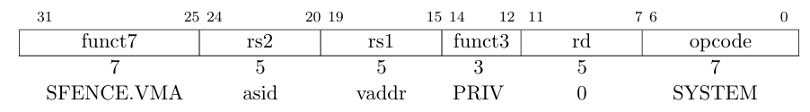
在内存管理中，页表负责将虚拟地址映射到物理地址。当修改了页表后，这些修改不会自动在处理器的缓存中生效。为了确保后续的指令能使用更新后的页表，必须通过 SFENCE.VMA 指令来刷新这些缓存。此外，处理器在执行指令时，可能隐式地对内存管理数据结构进行读取和写入操作，但这些隐式操作和显式的内存操作通常是无序的。SFENCE.VMA 指令可以强制处理器将某些隐式操作在显式操作之前完成，从而确保操作的顺序性。
SFENCE.VMA 是 RISC-V 架构中的一条特权指令，用于刷新与地址翻译相关的本地硬件缓存，处理内存管理数据结构的同步，特别是当需要确保对这些数据结构的修改在不同的硬件组件之间保持一致时需要频繁使用该指令。SFENCE.VMA 只影响本地核心（hart），如果需要在多个核心之间同步，则需要核间中断等额外机制。虽然 SFENCE.VMA 指令对于维护一致性至关重要，但频繁调用可能会影响系统性能，因此，应根据实际需要合理使用，以平衡一致性和性能之间的关系。
SFENCE.VMA 的行为依赖于 rs1 和 rs2，在 RISC-V 特权指令集中如下所述：
| 条件 |
|---|
- 如果 rs1=x0 且 rs2=x0，栅栏会对所有地址空间的页面表的所有读写进行排序，并将所有地址翻译缓存条目标记为 invalid。 |
- 如果 rs1=x0 且 rs2 不是 x0，栅栏会对指定的地址空间的页面表的所有读写进行排序，但不对全局映射进行排序。它还会失效与指定地址空间匹配的地址翻译缓存条目，但不包括全局映射的条目。 |
- 如果 rs1 不是 x0 且 rs2=x0，栅栏会对所有地址空间的与 rs1 对应的虚拟地址的叶子页面表条目的读写进行排序，并失效包含该虚拟地址的所有叶子页面表条目的地址翻译缓存条目。 |
- 如果 rs1 不是 x0 且 rs2 不是 x0，栅栏会对与 rs1 对应的虚拟地址在指定地址空间的叶子页面表条目的读写进行排序，并失效与 rs1 对应的虚拟地址并匹配指定地址空间的所有叶子页面表条目的地址翻译缓存条目，但不包括全局映射的条目。 |
- 如果 rs1 中的值不是有效的虚拟地址，则 SFENCE.VMA 指令没有效果，且不会引发异常。 |
- 当 rs2=x0 时，rs2 中的值的 SXLEN-1:ASIDMAX 位保留供将来标准使用。在标准扩展定义其用法之前，这些位应由软件置为零并被当前实现忽略。此外，如果 ASIDLEN < ASIDMAX，则实现应忽略 rs2 中值的 ASIDMAX-1:ASIDLEN 位。 |
SFENCE.VMA 指令的作用是确保在执行该指令之前的所有写入操作已经被提交到内存。这意味着 Store Buffer 中的所有未完成写入都会被写入到 DCache 或最终的内存地址中；SFENCE.VMA 发出刷新信号，通知 MMU（内存管理单元）更新 TLB（转换后备缓冲区）等内部状态。这一刷新信号是瞬时的，并且没有返回确认信号。在验证时需要通过再次访问观察是否 miss 的形式来进行，也可以通过分析波形文件观察 TLB 内部寄存器行为。
| Store Buffer（存储缓冲区） |
|---|
| Store Buffer 用于提高内存写入效率，允许 CPU 在发出写入操作后，立即继续执行后续指令，而不需要等待内存系统确认写入完成。这有助于减少 CPU 的闲置时间，提高指令执行的整体效率。写回时，写入数据首先被放入 Store Buffer，随后，数据会按某种策略写入主内存（如 DCache 或其他存储层级）。Store Buffer 维护写入操作的顺序，但不保证这些写入操作立即反映在内存中。在多核处理器中，Store Buffer 可以帮助降低缓存一致性协议的复杂性。 |
支持 HFENCE.VVMA 与 HFENCE.GVMA 指令
事实上，对 hv（SFENCE Bundle 中的信号，用于刷新第一阶段地址转换的条目）和 hg（SFENCE Bundle 中的信号，用于刷新第二阶段地址转换的条目）信号不为 0 的情况执行的指令并不是 SFENCE.VMA，而是 HFENCE.VVMA 和 HFENCE.GVMA：
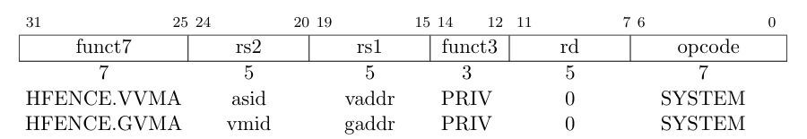
这两个指令与 SFENCE.VMA 功能很相似，区别在于 HFENCE.VVMA 适用于由 vsatp 控制的 VS 级别内存管理数据结构；HFENCE.GVMA 适用于由 hgatp 控制的虚拟机监管程序 G 阶段内存管理数据结构。
HFENCE.VVMA 仅在 M 模式或 HS 模式生效，类似于暂时进入 VS 模式并执行 SFENCE.VMA 指令，可以保证当前 hart 之前的所有存储操作在后续的隐式读取 VS 级别内存管理数据结构之前都已经排序；注意这里所说的隐式读取指的仅有在 HFENCE.VVMA 之后执行的，并且 hgatp.VMID 与执行 HFENCE.VVMA 相同的时候，简单来说就是仅对当前这一个虚拟机生效。rs1 与 rs2 的功能与 SFENCE.VMA 相同。
对 HFENCE.GVMA 来说，rs1 指定的是客机的物理地址。由于主机采用 SV48 而虚拟机采用 SV48x4，客机物理地址比主机物理地址多两位，因此此时需要将 rs1 对应的客机物理地址右移两位。如果某一个虚拟机的地址翻译模式更改了，也即 hgatp.MODE 对某个 VMID 更改了，则必须使用 HFENCE.GVMA 指令，将 rs1 设为 0，rs2 设为 0 或 VMID 进行刷新。
在香山中，由于 TLB 本身不存储中间物理地址，也即 TLB 并不存储 VS 阶段转换出来的虚拟机物理地址，也无法单独提供 G 阶段地址转换请求。在 TLB 中存储的是两阶段地址翻译的最终结果，因此 HFENCE.VVMA 与 HFENCE.GVMA 在 TLB 中作用相同，均为刷新掉两阶段地址翻译的结果。无论 hv 与 hg 哪一个信号为 1 都将刷新两阶段的条目。
支持 SINVAL 扩展
在 RISC-V 特权指令集中定义了 Svinval 扩展（Supervisor Virtual Address Invalidation），在香山昆明湖架构实现了该扩展。Svinval 扩展的意义在于将 SFENCE.VMA 指令更加细化为 SFENCE.W.INVAL、SINVAL.VMA、SFENCE.INVAL.IR 三条指令（HFENCE.VVMA 和 HFENCE.GVMA 同理）。
SINVAL.VMA 指令事实上与 SFENCE.VMA 指令的功能基本一致，只是添加了对 SFENCE.W.INVAL 与 SFENCE.INVAL.IR 两个指令的相互排序，可以理解为需要在两个指令中间进行。SFENCE.W.INVAL 指令用于确保当前 RISC-V hart 可见的任何先前存储在后续由同一个 hart 执行的 SINVAL.VMA 指令之前被重新排序。SFENCE.INVAL.IR 指令确保当前 hart 执行的任何先前 SINVAL.VMA 指令在后续隐式引用内存管理数据结构之前被排序。当由单个 hart 按顺序（不一定连续）执行 SFENCE.W.INVAL、SINVAL.VMA 和 SFENCE.INVAL.IR 时，可以相当于执行了 SFENCE.VMA 指令。
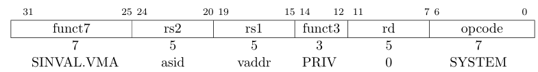

支持软件更新 A/D 位
A 位（Access）用于指示某一页面是否被访问过。如果处理器对该页面进行任何形式的访问（读/写/取指），则 A 位会被设置为 1。每当 CPU 访问某个页面时，操作系统或硬件会自动将 A 位设置为 1，这种更新通常是硬件支持的，由处理器在地址转换时自动进行。
D 位（Dirty）指示页面是否被修改。如果页面在内存中被写入，则 D 位会被设置为 1，表示该页面的内容已被更改。当处理器对页面进行写操作时，通常会自动将 D 位设置为 1，这种更新通常也是由硬件支持的。在页面替换过程中，操作系统会检查 D 位，如果 D 位为 1，操作系统会将页面写回到磁盘，并在写回后清除 D 位，以表示页面已经被保存且不再是“脏”的。
在香山昆明湖架构中，并不支持硬件更新 A/D 位，而是在需要更新的时候通过 Page Fault 通知软件进行页表更新。具体来说，每当处理器访问某一页时检查该页 A 位如果是 0，那么会发生 PF；同样的，每当处理器写入某一页时检查该页的 D 位如果是 0，同样会发生 PF。在软件处理异常后，操作系统会允许处理器再次访问页面，只有在页表得到更新且相关状态位（A 和 D 位）被正确设置后，处理器才能继续进行后续的内存访问。